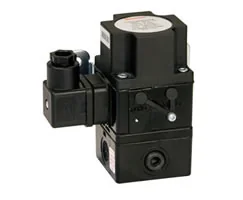
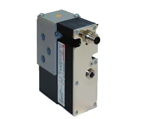
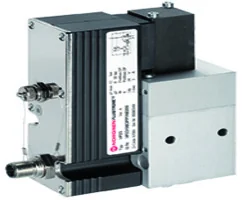
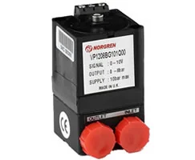
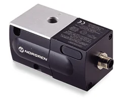
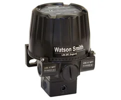
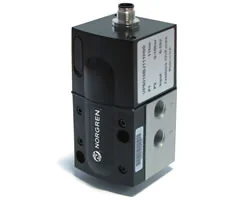
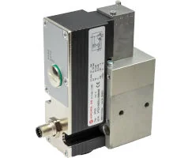

69 mã sản phẩm
Danh sách canonical dẫn về trang chi tiết từng part number.
Van tỷ lệ (proportional valves) Norgren điều khiển áp suất hoặc lưu lượng khí một cách liên tục theo tín hiệu analog (ví dụ 0–10V, 4–20mA), dùng trong các ứng dụng cần kiểm soát lực, tốc độ hay áp suất chính xác. Khi chọn van tỷ lệ, bạn cần xác định dải áp suất/lưu lượng điều khiển, loại tín hiệu vào, kiểu phản hồi và cỡ cổng, vì vậy đối chiếu part number với datasheet là bước quan trọng trước khi báo giá để tránh sai dải làm việc. Nếu bạn đang thay thế van trên hệ điều khiển sẵn có, hãy gửi mã cũ và thông số tín hiệu để chúng tôi xác nhận tương thích. Trang giúp đội mua hàng và kỹ sư điều khiển tại Việt Nam tra cứu nhanh theo mã, so sánh biến thể tín hiệu và tìm phụ kiện liên quan như cáp điều khiển, đầu nối và bộ lọc khí đầu vào. Gửi part number, BOM hoặc thông số ứng dụng để được tư vấn đúng dải điều khiển và báo giá.

Với van tỷ lệ, thông tin quan trọng nhất là dải áp suất/lưu lượng cần điều khiển và loại tín hiệu (0–10V hay 4–20mA). Hãy gửi kèm các giá trị này cùng part number cũ nếu có. Khí đầu vào cần sạch và khô để van hoạt động ổn định, nên chúng tôi cũng tư vấn bộ lọc phù hợp. Mọi cấu hình đều được xác minh trên datasheet trước khi báo giá nhằm đảm bảo van đáp ứng đúng yêu cầu điều khiển.
Danh sách canonical dẫn về trang chi tiết từng part number.
Datasheet, brochure, installation guide hoặc tài liệu liên quan.
Mã liên quan giúp đặt đồng bộ và tránh thiếu vật tư khi lắp.
Hiển thị 69 mã thuộc category này.
VP50 series proportional pressure control valve, G1/4, 0-10 bar, 4-20 mA

VP50 series proportional pressure control valve, G1/4, 0-10 bar, 0-10 V

VP51 series proportional pressure control valve, G1/4, 0-10 bar, 0-10 V

VP50 series proportional pressure control valve, G1/4, 0-2 bar, 4-20 mA

VP50 series proportional pressure control valve, G1/4, 0-8 bar, 4-20 mA

VP51 series proportional pressure control valve, G1/4, 0-10 bar, 4-20 mA

VP50 series proportional pressure control valve, G1/4, 0-6 bar, 0-10 V

VP12 series miniature proportional pressure control valve, G1/8, 0-8 bar, 0-10 V

VP10 series proportional pressure control valve, G1/4, 0.2-1 bar, 4-20 mA

VP50 series proportional pressure control valve, G1/4, 0-6 bar, 4-20 mA

VP60 series proportional flow and directional control valve, G1/4, 0-10 V

VP23 series proportional pressure control valve, 16mm, 0-10 bar, 0-10 V

VP10 series proportional pressure control valve, G1/4, 0.2-8 bar, 4-20 mA

VP60 series proportional flow and directional control valve, G1/4, 0-10 V

VP23 series proportional pressure control valve, 16mm, 0-10 bar, 4-20 mA

VP23 series proportional pressure control valve, 8mm, 0-10 bar, 0-10 V

VP12 series miniature proportional pressure control valve, G1/8, 0-6 bar, 0-10 V

VP23 series proportional pressure control valve, 8mm, 0-16 bar, 4-20 mA

VP23 series proportional pressure control valve, 16mm, 0-16 bar, 4-20 mA

VP10 series proportional pressure control valve, G1/4, 0.2-6 bar, 0-10 V

VP12 series miniature proportional pressure control valve, G1/8, 0-4 bar, 0-10 V

VP10 series proportional pressure control valve, G1/4, 0.2-4 bar, 4-20 mA

VP50 series proportional pressure control valve, G1/4, 0-6 bar, IO-Link

VP12 series miniature proportional pressure control valve, G1/8, 0-1 bar, 0-10 V

VP50 series proportional pressure control valve, G1/4, 0-2 bar, 0-10 V

VP10 series proportional pressure control valve, G1/4, 0.2-6 bar, 4-20 mA

VP50 series proportional pressure control valve, G1/4, 0-4 bar, 4-20 mA

VP23 series proportional pressure control valve, 16mm, 0-16 bar, IO-Link

VP12 series miniature proportional pressure control valve, G1/8, 0-6 bar, 4-20 mA

VP50 series proportional pressure control valve, 0-10 bar, 4-20 mA

VP12 series miniature proportional pressure control valve, G1/8, 0-4 bar, 4-20 mA

VP60 series proportional flow and directional control valve, G1/4, IO-Link

VP23 series proportional pressure control valve, 16mm, 0-16 bar, 0-10 V

140 failsafe series current to pressure electronic converter, 1/4 NPT, 3-15 psi, 4-20 mA

VP10 series proportional pressure control valve, G1/4, 0.2-4 bar, 0-10 V

VP10 series proportional pressure control valve, G1/4, 0.2-8 bar, 0-10 V

VP23 series proportional pressure control valve, 8mm, 0-10 bar, 4-20 mA

VP60 series proportional flow and directional control valve, G1/4, -5 V-+5 V

VP50 series proportional pressure control valve, G1/4, 0-10 bar, IO-Link

VP23 series proportional pressure control valve, 16mm, 0-2 bar, 0-10 V

VP23 series proportional pressure control valve, 8mm, 0-16 bar, 0-10 V

140 failsafe series current to pressure electronic converter, 1/4 NPT, 0.2-1 bar, 4-20 mA

VP10 series proportional pressure control valve, G1/4, 0.2-2 bar, 4-20 mA

VP10 series proportional pressure control valve, G1/4, 0.2-8 bar, 0-10 V

VP23 series proportional pressure control valve, 16mm, 0-10 bar, IO-Link

VP50 series proportional pressure control valve, G1/4, 0-2 bar, IO-Link

VP50 series proportional pressure control valve, G1/4, 0-8 bar, 0-10 V

VP23 series proportional pressure control valve, 8mm, 0-2 bar, 4-20 mA

VP23 series proportional pressure control valve, 16mm, 0-2 bar, 4-20 mA

VP10 series proportional pressure control valve, G1/4, 0.2-1 bar, 0-10 V

VP50 series proportional pressure control valve, 0-6 bar, 4-20 mA

VP23 series proportional pressure control valve, 8mm, 0-10 bar, IO-Link

VP23 series proportional pressure control valve, 8mm, 0-10 bar, 4-20 mA

VP50 series proportional pressure control valve, 1/4 NPT, 0-2 bar, IO-Link

VP50 series proportional pressure control valve, 0-2 bar, IO-Link

VP50 series proportional pressure control valve, 1/4 NPT, 0-6 bar, IO-Link

VP50 series proportional pressure control valve, 0-6 bar, IO-Link

VP50 series proportional pressure control valve, 1/4 NPT, 0-8 bar, 0-10 V

VP50 series proportional pressure control valve, 1/4 NPT, 0-10 bar, IO-Link

VP50 series proportional pressure control valve, 0-10 bar, IO-Link

VP51 series proportional pressure control valve, 0-10 bar, 0-10 V

VP60 series proportional flow and directional control valve, 1/4 NPT, IO-Link

VP12 series miniature proportional pressure control valve, G1/8, 0-1 bar, 4-20 mA

VP12 series miniature proportional pressure control valve, G1/8, 0-8 bar, 4-20 mA

VP23 series proportional pressure control valve, 8mm, 0-2 bar, 4-20 mA

VP23 series proportional pressure control valve, 8mm, 0-2 bar, 0-10 V

VP23 series proportional pressure control valve, 8mm, 0-2 bar, IO-Link

VP23 series proportional pressure control valve, 16mm, 0-2 bar, IO-Link

VP23 series proportional pressure control valve, 8mm, 0-16 bar, IO-Link
Tùy mã, phổ biến là 0–10V hoặc 4–20mA. Bạn gửi part number để chúng tôi đối chiếu datasheet và xác nhận loại tín hiệu vào trước khi báo giá.
Gửi áp suất làm việc và độ phân giải mong muốn; chúng tôi tra cứu mã có dải điều khiển phù hợp theo thông số kỹ thuật.
Nên dùng khí sạch, khô. Chúng tôi tư vấn bộ lọc và phụ kiện liên quan theo datasheet để van hoạt động ổn định.
Có. Chúng tôi kiểm tra mã thay thế tương đương và so sánh dải điều khiển, tín hiệu để bạn xác minh trước khi đặt hàng.